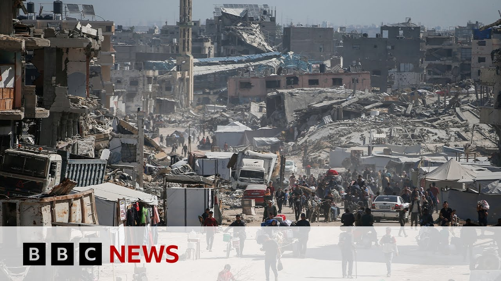

【以色列在加沙北部发动“陆海空袭击”致近百人死亡 | BBC新闻】
Summary: Nearly 100 people were killed in Gaza after intense Israeli strikes, as Israel threatens a major offensive if no deal with Hamas is reached. Trump visited the region, while aid remains blocked and conditions worsen.
摘要： 加沙近百人在以色列猛烈空袭中丧生，以方威胁若未与哈马斯达成协议将发动大规模进攻。特朗普访问该地区，援助仍被封锁，局势持续恶化。

⏱️ Estimated Reading Time: 9 min
Hello, I'm Regini Vadin and welcome to BBC News.
你好，我是雷吉尼·瓦丁，欢迎收看BBC新闻。
Now, nearly a hundred people have been killed in Gaza after another intense wave of Israeli strikes in the north of the territory, authorities there say.
当地当局称，加沙北部再次遭到以色列猛烈空袭，造成近百人死亡。
Well, it comes as Israel pledged to launch a major offensive and reoccupy all of Gaza if a deal with Hamas wasn't agreed by the end of the week.
以色列誓言，若本周未与哈马斯达成协议，将发动大规模进攻并重新占领加沙全境。
Well, President Trump's visit to the region is wrapping up now.
特朗普总统对该地区的访问即将结束。
Local reports say Israel's military launched a large-scale ground, air, and sea assault early on Friday on the town of Bet Ly in the far northwestern corner of the territory.
当地报道称，以色列军队周五早些时候对该地区西北角的贝特利亚镇发动了大规模陆海空袭击。
Well, the assault began with smoke bomb bargages followed by intense artillery shelling from nearby Israeli positions.
袭击以烟雾弹开始，随后是以色列附近阵地的猛烈炮击。
While our Gaza correspondent says this is the most extensive ground assault on northern Gaza since Israel resumed its offensive in early March.
我台加沙记者称，这是自以色列3月初恢复进攻以来对加沙北部最广泛的地面袭击。
Gaza's health ministry says 2,876 people have been killed since those strikes were resumed by Israel on the 18th of March.
加沙卫生部表示，自以色列3月18日恢复空袭以来，已有2876人丧生。
That now takes the total number killed in Gaza during the conflict to more than 53,000.
这使得冲突期间加沙死亡总人数超过5.3万。
These people witnessed today's actions in Bleia.
这些人目睹了今天在布莱亚的行动。
They were innocent people taken by a sudden strike.
他们是被突然袭击夺去生命的无辜者。
Only their remains left as you see.
如你所见，只留下他们的遗骸。
They were my sisters and daughters.
她们是我的姐妹和女儿。
Those who do not die from the bombing will die of hunger.
未被炸死的人也将死于饥饿。
We were sleeping and the houses were full of children, women, and displaced people whose homes had been destroyed and now living in tents.
我们正在睡觉，房子里挤满了孩子、妇女和流离失所者——他们的家园被毁，如今住在帐篷里。
Suddenly at 1:30 a.m. and without prior warning, they bombed a house.
凌晨1点30分，他们在毫无预警的情况下轰炸了一栋房屋。
Many children and women were killed and their bodies scattered in the streets.
许多妇女儿童遇难，尸体散落街头。
A view on the ground from Bait Laere.
这是来自拜特莱尔的现场画面。
Well, these strikes come as indirect talks on de ceasefire and hostage release deal are continuing between Israel and Hamas in Qatar with Israel having stopped deliveries of aid and other supplies to Gaza since March.
袭击发生时，以色列与哈马斯正在卡塔尔就停火和释放人质协议进行间接谈判，而以色列自3月起就停止向加沙运送援助物资。
Let's have a listen to President Trump talking about the situation there a short while ago on his trip to the region.
让我们听听特朗普总统不久前访问该地区时对局势的评论。
We're looking at Gaza and we got to get that taken care of.
我们关注加沙，必须解决这个问题。
A lot of people are starving.
很多人正在挨饿。
A lot of people are there's a lot of bad things going on.
那里正在发生许多糟糕的事情。
Okay.
好的。
President Trump there.
这是特朗普总统。
Well, let's speak now to France Le, the emergency coordinator for Doctors Without Borders, who's in Al-Mwasi in Gaza.
现在让我们连线无国界医生组织紧急协调员弗兰斯·勒，他在加沙的阿尔穆瓦西。
Welcome to BBC News.
欢迎来到BBC新闻。
We of course appreciate you taking the time to talk to us.
感谢你抽空接受采访。
Just tell us about the situation as you see it where you are.
请介绍一下你所在地区的现状。
Um, good afternoon.
下午好。
Um it's now the third time I'm here in Gaza and although the situation here has been catastrophic over the past 19 months.
这是我第三次来到加沙，尽管过去19个月这里的局势已很灾难性。
Um the situation since the resumption of the war has just getting worse by the day.
但自战争重启以来，情况正日益恶化。
Um people being forcibly displaced.
人们被迫流离失所。
Uh we talk about more than 400,000 people being displaced.
超过40万人无家可归。
uh continued repeated evacuation orders with the population nowhere to go, civilian structures being hit, hospitals included um hospitals and health centers being taken out of service.
撤离命令不断重复，民众无处可去，民用设施包括医院遭袭，医疗中心停止运作。
So situation for Palestinians and those trying to help um um in Gaza has become hell.
因此加沙的巴勒斯坦人和援助者的处境已如地狱。
You describe it quite starkly there, don't you, France?
你的描述非常严峻，弗兰斯？
And of course, all of this as that aid blockade by Israel continues on, which means that fresh supplies can't come in to the people who need them most.
而以色列的援助封锁仍在持续，急需物资无法送达民众手中。
What do you make of all of that?
你如何看待这一切？
And if you don't get supplies, how bad is it going to get in a situation that's already dire?
若补给中断，本已严峻的局势会恶化到什么程度？
Um, one need to miss now than the the ninth week we in without supplies getting into the Gaza Strip.
我们已连续九周没有物资进入加沙地带。
Um food is running low.
食物即将耗尽。
Um our colleagues and families and patients telling us that they have hardly food left for one meal a day.
同事、家属和病患告诉我们，他们每天几乎只剩一顿饭。
Our medical supplies are running low.
医疗物资即将告罄。
The fuel is getting dangerous.
燃料储备岌岌可危。
Low fuel needed for the ambulances, fuel needed for the generators to run of the hospitals.
救护车需要燃料，医院发电机需要燃料。
um the to run the intensive care units um to run the incubators of the newborns.
重症监护室需要燃料，新生儿恒温箱需要燃料。
Um we're running with light speed towards the abbyss um um towards this humanitarian abuse and the moment will come if there isn't any change the soonest um we will need to shut down um the generators and the incubators and the intensive care units here in Gaza.
我们正飞速滑向深渊，若情况不立即改变，我们将不得不关闭加沙的发电机、恒温箱和重症监护室。
How worried are the people that you're working with and that you talked to about this new offensive that Israel has now promised and it looks like it's now begun?
你接触的民众对以色列已承诺并似乎已开始的新攻势有多担忧？
And just a personal question as well, how safe do you yourself feel?
也请谈谈你个人的安全感？
Um to start with your last questions um I think we we all need to understand that there is no safe place here in Gaza and this was like that since the very first day.
首先回答最后一个问题——加沙根本没有安全之地，从第一天起便是如此。
That's why I do personally um considered as cynical as well if no evacuation orders being placed and shared with the population asking them to leave to safe areas where there is no safe area to go to.
因此我认为撤离命令是讽刺的——要求民众前往根本不存在的安全区。
Um our colleagues, the population we serve, they desperate, they're tired, they're exhausted.
我们的同事和服务对象都陷入绝望、疲惫不堪。
Um yesterday I'm passing by one of our health centers the the the medical lead there the nursing supervisor he told me front um I'm I'm I'm desperate it's it's breaking my heart um turning a mother away which is blinging to have her kit included in our nutritional program but I had to say no because they would not yet meet the criteria, but I do know with no food getting in and um hardly having enough, the kid would fit the criteria in a week.
昨天一位医疗主管告诉我，他不得不拒绝一位恳求孩子加入营养计划的母亲，这让他心碎——虽然孩子目前不符合标准，但若食物持续短缺，一周后就会符合。
Um and this is the daily decisions um our teams have to have to take.
这就是我们团队每天不得不做的抉择。
Um and again we we call upon um all um the international community, the Israeli authorities to to end that collective punishment of um Palestinians um and use humanitarian aid to use food um as a weapon of war.
我们再次呼吁国际社会和以色列当局停止对巴勒斯坦人的集体惩罚，不要把援助和食物当作战争武器。
Okay, thank you so much for sharing your story.
非常感谢你的分享。
Frank Luz, emergency coordinator for Doctors Without Borders, speaking to us from Al Moasi.
无国界医生组织紧急协调员弗兰克·卢兹从阿尔莫阿西发回的报道。